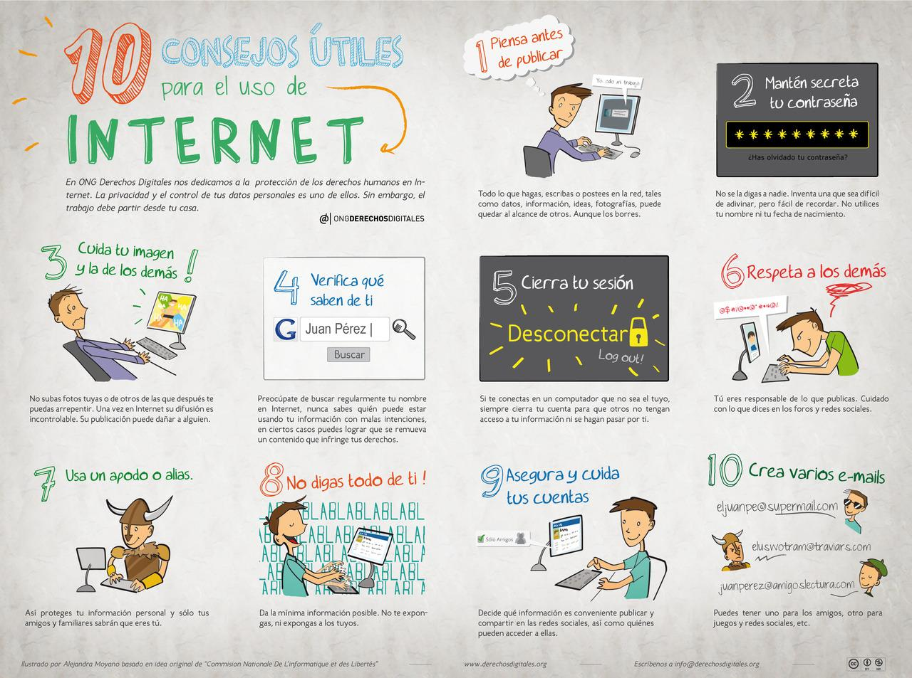
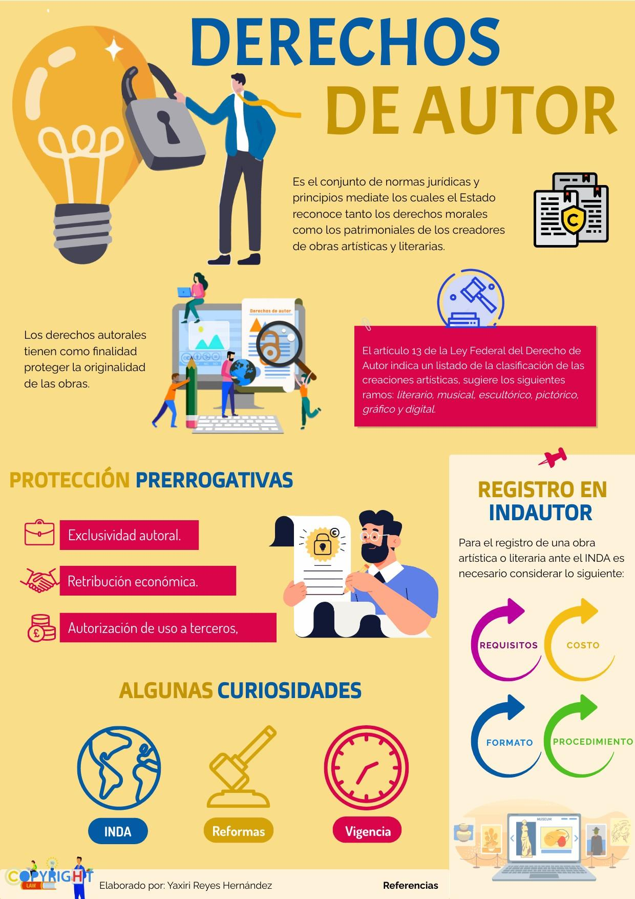

La búsqueda de información en Internet es el proceso de localizar, seleccionar y utilizar información disponible en la web mediante motores de búsqueda como Google o Bing. Esta habilidad permite acceder rápidamente a conocimientos, recursos educativos, noticias, libros, videos y documentos de diferentes áreas. Es importante realizar búsquedas utilizando palabras clave específicas y verificar que la información provenga de fuentes confiables y actualizadas para garantizar su calidad y veracidad.
Facilita el acceso al conocimiento. Apoya el aprendizaje y la investigación. Permite encontrar información de manera rápida y eficiente. Favorece el desarrollo de habilidades digitales y el pensamiento crítico.
Utiliza palabras clave claras y precisas. Verifica el autor y la fecha de publicación. Consulta varias fuentes antes de utilizar la información. Prefiere sitios oficiales, educativos o académicos.
La organización y almacenamiento de información digital consiste en clasificar, ordenar y guardar archivos electrónicos de manera que sean fáciles de encontrar, utilizar y proteger. Una buena organización mejora la productividad, evita la pérdida de información y facilita el trabajo colaborativo.
Permite localizar archivos rápidamente. Evita la duplicación de documentos. Protege la información mediante copias de seguridad. Facilita el trabajo en equipo. Optimiza el uso del espacio de almacenamiento..
Crear carpetas organizadas por temas. Utilizar nombres claros y descriptivos para los archivos. Realizar copias de seguridad periódicamente. Almacenar documentos importantes en la nube. Eliminar archivos innecesarios y mantener el orden.
El uso ético de la información implica utilizar los recursos digitales de manera responsable, respetando la privacidad, la veracidad de los datos y el trabajo intelectual de otras personas. También significa evitar el plagio y citar correctamente las fuentes consultadas.
Promueve la honestidad académica. Respeta el trabajo de los autores. Favorece el uso responsable de Internet. Fortalece la credibilidad de las investigaciones. Protege la privacidad y la información personal.
Verificar que la información sea confiable. Citar siempre las fuentes utilizadas. No copiar trabajos sin autorización. Compartir información verificada. Respetar la privacidad de otras personas.

Los derechos de autor son un conjunto de normas que protegen las obras originales creadas por una persona, como libros, fotografías, música, videos, programas informáticos y páginas web. Estos derechos permiten que el autor decida cómo se utiliza su obra y reciba el reconocimiento correspondiente.
Protegen la creatividad y la innovación. Reconocen el esfuerzo de los autores. Evitan el uso indebido de obras protegidas. Promueven el respeto por la propiedad intelectual.
Utilizar contenido con licencia abierta cuando sea posible. Citar correctamente al autor y la fuente. Solicitar permiso para utilizar obras protegidas. Respetar las licencias de uso de imágenes, música y documentos.
